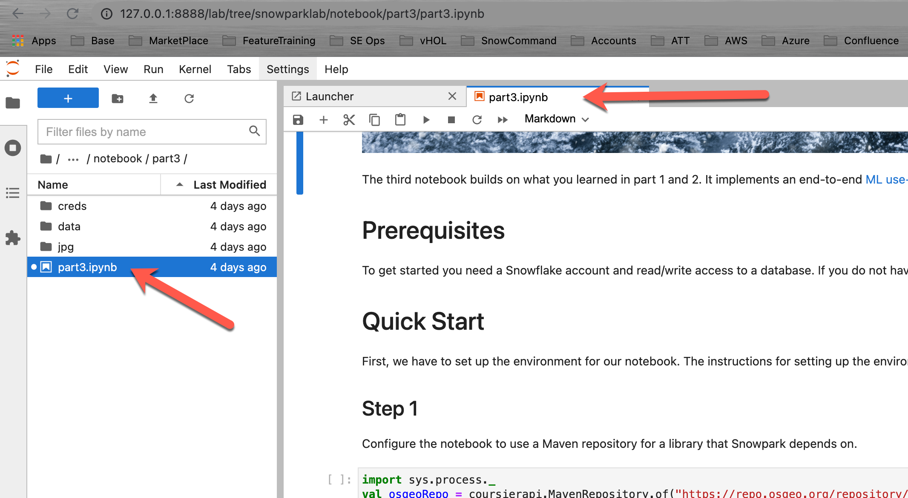

This project will demonstrate how to get started with Jupyter Notebooks on Snowpark, a new product feature announced by Snowflake for public preview during the 2021 Snowflake Summit. With this tutorial you will learn how to tackle real world business problems as straightforward as ELT processing but also as diverse as math with rational numbers with unbounded precision, sentiment analysis and machine learning.
Snowpark not only works with Jupyter Notebooks but with a variety of IDEs. Instructions on how to set up your favorite development environment can be found in the Snowpark documentation under Setting Up Your Development Environment for Snowpark.
Snowpark
Snowpark is a new developer framework of Snowflake. It brings deeply integrated, DataFrame-style programming to the languages developers like to use, and functions to help you expand more data use cases easily, all executed inside of Snowflake. Snowpark support starts with Scala API, Java UDFs, and External Functions.
With Snowpark, developers can program using a familiar construct like the DataFrame, and bring in complex transformation logic through UDFs, and then execute directly against Snowflake's processing engine, leveraging all of its performance and scalability characteristics in the Data Cloud.
Snowpark provides several benefits over how developers have designed and coded data driven solutions in the past:
- Simplifies architecture and data pipelines by bringing different data users to the same data platform, and process against the same data without moving it around.
- Accelerates data pipeline workloads by executing with performance, reliability, and scalability with Snowflake's elastic performance engine.
- Eliminates maintenance and overhead with managed services and near-zero maintenance.
- Creates a single governance framework and a single set of policies to maintain by using a single platform.
- Provides a highly secure environment with administrators having full control over which libraries are allowed to execute inside the Java/Scala runtimes for Snowpark.
The following tutorial highlights these benefits and lets you experience Snowpark in your environment.
Prerequisites:
This repo is structured in multiple parts. Each part has a notebook with specific focus areas. All notebooks in this series require a Jupyter Notebook environment with a Scala kernel.
All notebooks will be fully self contained, meaning that all you need for processing and analyzing datasets is a Snowflake account. If you do not have a Snowflake account, you can sign up for a free trial. It doesn't even require a credit card.
- Use of the Snowflake free 30-day trial environment
- All notebooks in this series require a Jupyter Notebook environment with a Scala kernel.
- If you do not already have access to that type of environment, Follow the instructions below to either run Jupyter locally or in the AWS cloud.
- Instructions on how to set up your favorite development environment can be found in the Snowpark documentation under Setting Up Your Development Environment for Snowpark.
What you will learn
- Part 1The first notebook in this series provides a quick-start guide and an introduction to the Snowpark DataFrame API. The notebook explains the steps for setting up the environment (REPL), and how to resolve dependencies to Snowpark. After a simple "Hello World" example you will learn about the Snowflake DataFrame API, projections, filters, and joins.
- Part 2The second notebook in the series builds on the quick-start of the first part. Using the TPCH dataset in the sample database, it shows how to use aggregations and pivot functions in the Snowpark DataFrame API. Then it introduces UDFs and how to build a stand-alone UDF: a UDF that only uses standard primitives. From there, we will learn how to use third party Scala libraries to perform much more complex tasks like math for numbers with unbounded (unlimited number of significant digits) precision and how to perform sentiment analysis on an arbitrary string.
- Part 3The third notebook combines what you learned in part 1 and 2. It implements an end-to-end ML use case including data ingestion, ETL/ELT transformations, model training, model scoring, and result visualization.
Option 1: Running Jupyter locally
The following instructions show how to build a Notebook server using a Docker container.
- Download and install Docker.
- Make sure your docker desktop application is up and running.
- Make sure you have at least 4GB of memory allocated to Docker:

- Open your favorite terminal or command line tool / shell.
- Clone the GitHub Lab repo: cd ~ mkdir DockerImages
cd DockerImages git clone https://github.com/Snowflake-Labs/sfguide_snowpark_on_jupyter.git - Build the Docker container (this may take a minute or two, depending on your network connection speed)
cd ~/DockerImages/sfguide_snowpark_on_jupyter/docker docker build -t snowparklab . - Starting your Local Jupyter environmentType the following commands to start the Docker container and mount the snowparklab directory to the container. The command below assumes that you have cloned the git repo to ~/DockerImages/sfguide_snowpark_on_jupyter. Adjust the path if necessary.
The output should be similar to the followingcd ~/DockerImages/sfguide_snowpark_on_jupyter docker run -it --rm -p 8888:8888 -e JUPYTER_ENABLE_LAB=yes -v "$(pwd)":/home/jovyan/snowparklab --name snowparklab snowparklabTo access the server, open this file in a browser: file:///home/jovyan/.local/share/jupyter/runtime/jpserver-15-open.html Or copy and paste one of these URLs: http://162e383e431c:8888/lab?token=bdaead06c9944057a86f9d8a823cebad4ce66799d855be5d http://127.0.0.1:8888/lab?token=bdaead06c9944057a86f9d8a823cebad4ce66799d855be5d - Start a browser session (Safari, Chrome, ...). Paste the line with the local host address (127.0.0.1) printed in your shell window into the browser status bar and update the port (8888) to your port in case you have changed the port in the step above.
Type the following command into a new shell window when you want to stop the tutorial. All changes/work will be saved on your local machine.
docker stop snowparklab
Option 2: Running Jupyter in the AWS cloud
In case you can't install docker on your local machine you could run the tutorial in AWS on an AWS Notebook Instance.
- Create a Notebook instance

- Create a Lifecycle Policy.
 Open the lifecycle script and paste its content into the editor window.Creating the Notebook takes about 8 minutes.
Open the lifecycle script and paste its content into the editor window.Creating the Notebook takes about 8 minutes. - Upload the tutorial folder (github repo zipfile)
- Unzip folderOpen the Launcher, start a termial window and run the command below (substitue with your filename.
unzip SageMaker/<filename> -d SageMaker/
First, we have to set up the Jupyter environment for our notebook. The full instructions for setting up the environment are in the Snowpark documentation Configure Jupyter.
Setup your credentials file
To create a Snowflake session, we need to authenticate to the Snowflake instance. Though it might be tempting to just override the authentication variables with hard coded values in your Jupyter notebook code, it's not considered best practice to do so. If you share your version of the notebook, you might disclose your credentials by mistake to the recipient. Even worse, if you upload your notebook to a public code repository, you might advertise your credentials to the whole world. To prevent that, you should keep your credentials in an external file (like we are doing here).
Then, update your credentials in that file and they will be saved on your local machine. Even better would be to switch from user/password authentication to private key authentication.
- Open your Jupyter environment in your web browser
- Navigate to the folder: /snowparklab/creds
- Duplicate the file template_credentials.txt

- Rename the duplicated file to credentials.txt (right click menu)
- Double click the credential.txt file to open and edit it in the Jupyter environment
- Update the file to your Snowflake environment connection parameters

This is the first notebook of a series to show how to use Snowpark on Snowflake. This notebook provides a quick-start guide and an introduction to the Snowpark DataFrame API. The notebook explains the steps for setting up the environment (REPL), and how to resolve dependencies to Snowpark. After a simple "Hello World" example you will learn about the Snowflake DataFrame API, projections, filters, and joins.
Open the Part 1 notebook
Open your Jupyter environment. Navigate to the folder snowparklab/notebook/part1 and Double click on the part1.ipynb to open it


Now read through and run each step in the notebook.

This is the second notebook in the series. It builds on the quick-start of the first part. Using the TPCH dataset in the sample database, we will learn how to use aggregations and pivot functions in the Snowpark DataFrame API. Then, it introduces user definde functions (UDFs) and how to build a stand-alone UDF: a UDF that only uses standard primitives. From there, we will learn how to use third party Scala libraries to perform much more complex tasks like math for numbers with unbounded (unlimited number of significant digits) precision and how to perform sentiment analysis on an arbitrary string.
In this session, the focus will be on:
- Advanced API features and visualization
- User-defined functions
Open the Part 2 notebook
Open your Jupyter environment. Navigate to the folder snowparklab/notebook/part2 and Double click on the part2.ipynb to open it


Now read through and run each step in the notebook.

The third notebook builds on what you learned in part 1 and 2. It implements an end-to-end ML use-case including data ingestion, ETL/ELT transformations, model training, model scoring, and result visualization.
Open the Part 3 notebook
Open your Jupyter environment. Navigate to the folder snowparklab/notebook/part2 and Double click on the part2.ipynb to open it


Now read through and run each step in the notebook.

Snowpark is a brand new developer experience that brings scalable data processing to the Data Cloud. In Part1 of this series, we learned how to set up a Jupyter Notebook and configure it to use Snowpark to connect to the Data Cloud. Next, we built a simple Hello World! program to test connectivity using embedded SQL. Then we enhanced that program by introducing the Snowpark Dataframe API. Lastly we explored the power of the Snowpark Dataframe API using filter, projection, and join transformations.
We encourage you to continue with your free trial by loading your own sample or production data and by using some of the more advanced capabilities of Snowflake not covered in this lab.
Additional Resources:
- Read the Definitive Guide to Maximizing Your Free Trial document
- Attend a Snowflake virtual or in-person event to learn more about our capabilities and customers
- Join the Snowflake community
- Sign up for Snowflake University
- Contact our Sales Team to learn more
What we've covered:
- Quick Start: Set up the environment
- Hello World: First steps
- Snowflake DataFrame API: Query the Snowflake Sample Datasets via Snowflake DataFrames
- Aggregations, Pivots, and UDF's using the Snowpark API
- Data Ingestion, transformation, and model training